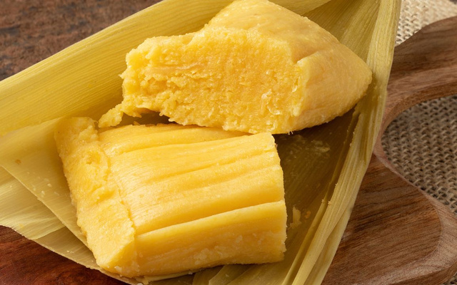

Pamonha
Brazilian Sweet Corn Pudding

Time: 1h 30 min
Servings: 10
Ingredients
- 20 ears of fresh corn
- 2 cups milk
- 1 tablespoon salt
- 1/2 can sweetened condensed milk
- 1/2 cup melted butter
- 3 cups sugar
Instructions
- Carefully remove the corn husks and reserve. Cut the kernels off the cobs.
- Blend the kernels with the milk in a blender until smooth.
- Strain the mixture using a sieve and discard the pulp.
- Add the salt, condensed milk, melted butter, and sugar. Mix well.
- Wash the reserved husks. Sew or fold them into small “bags.”
- Pour about 1 cup of batter into each bag, tie with string, and place them into boiling water.
- Cook for about 1 hour. Drain and serve warm.